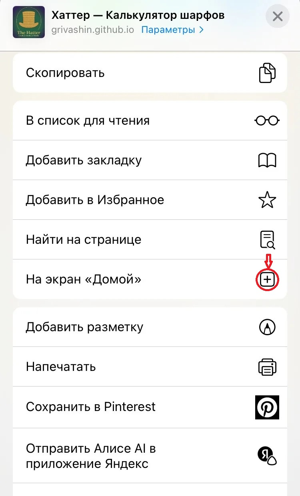

Руководство пользователя
«Хаттер: Дизайнер шарфов и пледов»
1. Введение
Добро пожаловать в «Хаттер» — интеллектуальный веб-инструмент для точного расчета параметров вязаных изделий.
Изначально созданный для шарфов и пледов, «Хаттер» эволюционировал в универсальный калькулятор для любого прямого полотна.
Теперь вы можете с математической точностью рассчитывать не только шарфы и пледы, но и оверсайз-свитера, пончо и кардиганы прямого кроя, вяжущиеся без сложных пройм и скосов горловины.
Продукт построен на технологии PWA (Progressive Web App). Это означает, что его можно установить на главный экран вашего смартфона или планшета в один клик. После установки он запускается в полноэкранном режиме (без адресной строки браузера), работает мгновенно и не требует постоянного поиска в интернете.
🔒 Конфиденциальность и безопасность
Все расчёты выполняются исключительно локально на вашем устройстве. Калькулятор не отправляет и не хранит на серверах никаких введённых вами данных. Вся информация обрабатывается прямо в браузере или в установленном приложении. Мы не используем сторонние трекеры, не собираем аналитику, не запрашиваем доступ к вашим личным данным. Ваши проекты остаются полностью приватными.
2. Ключевые возможности
- Точный расчет базы: Определение количества петель наборного ряда и общего числа рядов на основе индивидуальной плотности после ВТО.
- Умная подгонка под раппорт: Автоматический пересчет ширины и длины с отображением количества полных раппортов, чтобы узор не обрезался на краях.
- Гибкая настройка симметрии: Раздельный ввод петель симметрии для начала и конца ряда, а также учет кромочных петель.
- Адаптивность к технике: Поддержка вязания спицами (поворотные и круговые ряды) и крючком.
- Режим приложения (PWA): Установка на главный экран смартфона (iOS/Android) для мгновенного доступа в полноэкранном режиме, как у нативного приложения.
- Глобальная локализация: Переключение между метрической (см, м) и имперской (дюймы, ярды) системами, а также три языка интерфейса: RU, US English, UK English.
- Экспорт, сохранение и печать: Генерация готового к печати PDF-файла с вашими расчетами и печать результатов.
Инструкция по работе с калькулятором «Хаттер»
(с примерами по скриншотам)
Шаг 1. Выберите способ вязания и введите плотность
На скриншоте «Плотность (после ВТО)»:
- Выберите инструмент – нажмите «Спицы» или «Крючок» (в примере выбраны Спицы).
- Если вяжете крючком, термины изменятся на «столбики».
- Введите плотность – два числа:
- Петель в 10 см (в примере 22)
- Рядов в 10 см (в примере 17)
Эти цифры вы получили, измерив образец после ВТО (стирка/сушка) строго в центре на участке 10×10 см.
Шаг 2. Заполните раппорт и симметрию
На скриншоте «Раппорт и симметрия»:
- Раппорт (петли) – количество петель в одном повторении узора. В примере: 20.
- Раппорт (ряды) – количество рядов в одном повторении по высоте. В примере: 14.
- Симметрия (начало ряда) – сколько петель добавить перед первым раппортом для симметрии. В примере: 2.
- Симметрия (конец ряда) – сколько петель добавить после последнего раппорта. В примере: 0.
- Симметрия (ряды) – сколько рядов добавить после последнего ряда раппорта. В примере: 0.
- Кромочные (только для спиц):
- 0 – круговое вязание (петли набираются по кругу, без кромочных).
- 2 – поворотные ряды (классический способ).
В примере выбрано 2 (поворотные ряды).
Шаг 3. Введите размеры и направление
На скриншоте «Размеры и направление»:
- Направление вязания – выберите:
- Классическое (ширина → набор) – вы набираете петли по ширине, ряды вяжете по длине.
- Поперечное (длина → набор) – вы набираете петли по длине, ряды вяжете по ширине.
- Ширина – желаемая ширина изделия (в см или дюймах). В примере: 30 см.
- Длина – желаемая длина. В примере: 120 см.
- Ширина (в раппортах) и Длина (в раппортах) – можно заполнить, если вы хотите задать размер сразу в раппортах (поля синхронизируются). В примере они пустые (0).
Шаг 4. Нажмите «Рассчитать» и посмотрите результаты
После заполнения всех полей нажмите большую кнопку «Рассчитать» внизу экрана. Калькулятор покажет количество петель для набора, количество рядов и итоговый размер с учётом подгонки под раппорт.
3. Расширенные сценарии: Оверсайз и прямой крой
«Хаттер» идеально подходит для создания современных оверсайз-свитеров, джемперов и кардиганов прямого силуэта, которые вяжутся прямыми деталями без убавок и прибавок на проймы и горловину.
Как использовать:
- Рассчитайте желаемый Обхват груди готового изделия (с учетом желаемой свободы облегания, например, +15–20 см к мерке тела для оверсайза). Это значение введите в поле «Ширина».
- Измерьте желаемую Длину изделия от линии плеча до нижнего края. Введите это значение в поле «Длина».
- Калькулятор автоматически подгонит эти размеры под раппорт вашего узора, гарантируя, что рисунок будет выглядеть целостно на всем полотне.
4. Установка на устройство (PWA)
Чтобы «Хаттер» всегда был под рукой во время вязания, установите его как приложение. Это займет 10 секунд и избавит вас от необходимости каждый раз искать сайт в браузере.
Для пользователей iOS (iPhone / iPad):
Шаг 1: Нажмите «Поделиться»

Шаг 2: Выберите «На экран «Домой»
- Откройте сайт в браузере Safari.
- Нажмите кнопку «Поделиться» (квадрат со стрелкой вверх) в нижней панели.
- Прокрутите список вниз и выберите «На экран «Домой».
- Нажмите «Добавить». Готово! Иконка «Хаттер» появится среди ваших приложений и будет открываться в полноэкранном режиме.
Для пользователей Android:
Шаг 1: Откройте меню браузера
Шаг 2: Выберите «Установить приложение»
Шаг 3: Подтвердите установку
- Откройте сайт в браузере Google Chrome.
- Нажмите на меню (три точки) в правом верхнем углу.
- Выберите пункт «Установить приложение» или «Добавить на главный экран».
- Подтвердите действие. Иконка «Хаттер» будет добавлена на ваш рабочий стол для мгновенного запуска без элементов браузера.
5. Поддержка и развитие сообщества
«Хаттер» создается энтузиастами для энтузиастов. Мы постоянно работаем над улучшением алгоритмов и добавлением новых полезных функций.
Если инструмент сэкономил ваше время и помог создать идеальный проект, вы можете поддержать развитие проекта:
Поддержать проект на Boosty можно через кнопку «Поддержать» в правом верхнем углу калькулятора.
Ваши взносы напрямую идут на оплату хостинга, техническую поддержку и разработку новых инструментов для вязальщиц.
Если у вас есть вопросы, предложения или пожелания, пишите по адресу:
thehatterapp@gmail.com
← Вернуться к калькулятору